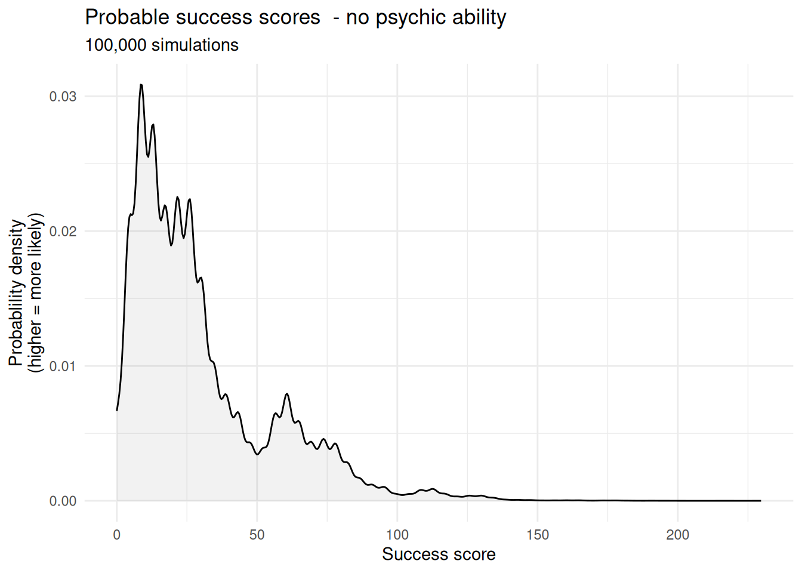
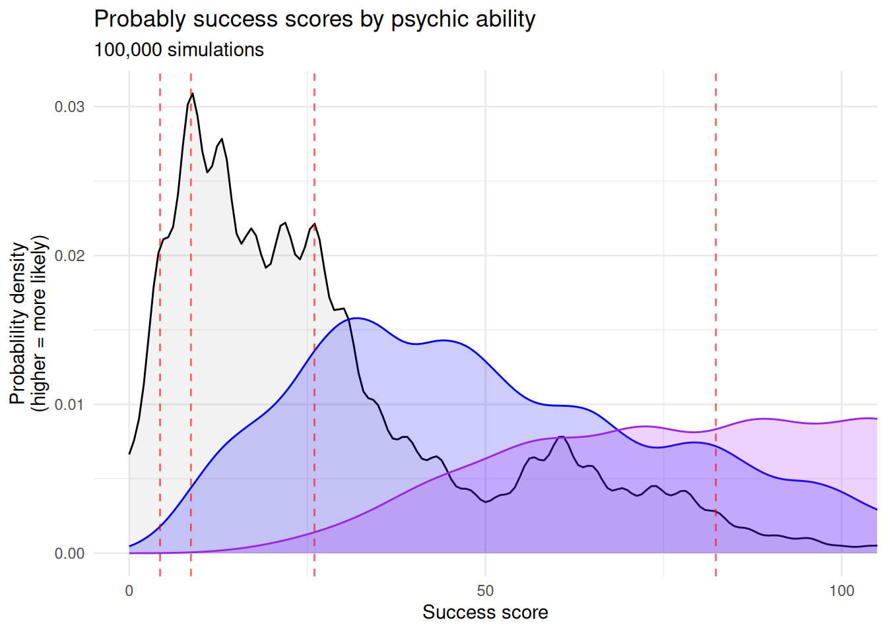

All the Right Questions August 2026
Welcome!
Hello, and welcome to the first ever edition of All the Right Questions: The new monthly (??) newsletter for Church Army staff in which we think together about how we can get, share and use the data that we need to do the work that God has called us to. The format is still evolving, but I’m hoping to use this space to signpost resources, celebrate successes and remind you all that I exist and that I care about your professional relationship with data.
Thanks so much for joining me here. If you’ve got any questions, or if there’s anything you’d like to see covered in a future edition of ARQ, please let me know! Drop me an email (I’m david.lovell), or just come and say hi to me at my desk.
This newsletter isn’t an official Church Army publication and as such it doesn’t represent the views of Church Army. Just me, Data Dave.
This week:
A promotion: Come and learn how to do surveys!
I’ve been making surveys for nearly a decade now. I’ve made some top-tier ones, but I’ve also made some awful guffs along the way. This Autumn, I’m going to be running a survey design workshop for my colleagues in the mission support team. Come and learn from all my mistakes! Exact dates to be confirmed, but the content will cover at least the following:
- Designing purposeful surveys
- Formalising big questions that mean something
- Building effective survey items
- Understanding bias and avoiding it
- Not doing anything wrong or illegal in your survey
Expect plenty of chat, lots of examples and no small amount of real-time survey design. It’s going to be an absoulte blast, and definitely more interesting than your actual job. Details to follow in future editions of ARQ. If you’re interested, please let me know because it would be a great encouragement to me.

The big idea: Saying ‘Yes And’ to our funders
I had a really exciting conversation an the Mission Support Team day on Tuesday. I was talking to someone who manages a project, and they were telling me that the project stakeholders were asking the wrong questions (or at least, they weren’t always asking all the right questions).

I was absolutely thrilled, and it helped me to put my finger on something that had been bothering me: Very often there is little-to-no critical engagement with stakeholder requirements for the quantitative reporting around a project. The stakeholder says, “Please measure X” and we say, “Okay we’ll ask our data guy to make it happen.”
At one level, that’s totally understandable: Oftentimes our stakeholders are really invested in one Big Number, and getting their money means promising to make the Big Number go up. It’s beyond the scope of this newsletter to evaluate whether that’s a good way of managing projects at a national level. That’s simply the funding environment we’re living in, which means that when a funder says, “Please measure X”, we probably don’t want to say “No, sorry.”
But we can say, “Yes, and…”
Yes, we can measure the number of new disciples, and we can measure the number of young people who say that have more joy and/or peace because of Jesus
Yes, we can measure self-reported confidence in evangelism, and we can ask participants if they have become more imaginative, hopeful or prayerful in their evangelism.
Whatever the benefits of having a Big Number may be, there are certainly pitfalls. In my experience, people are often cynical about the realisation of targets which appear to have been ‘pulled out of thin air’. At worst, quantitative impact reporting can become something of a box-ticking exercise - a necessary evil about which nobody is particularly excited. In that context, saying “Yes, and…“ can communicate a number of important things:
- It communicates that we are sincerely invested in the aims of the project. We really do want new disciples and confident evangelists! Asking better questions and sharing richer data shows that we desire to understand and celebrate the reality represented by the Big Number, rather than the number for its own sake.
- It demonstrates our expertise. When we tell stakeholders what we would like to measure, we show them that we understand our work and the value that it adds, and that we can not only deliver the projects objectives but also help them to understand the project’s impact more deeply.
- It builds understanding and trust. And whatever happens to the Big Number, it’s often the things we can’t measure - things like understanding and trust - that really get things done.
The Blunder: A vague question with no benchmarking
This is a new segment I’m trying out in which I reflect on a blunder I’ve made. I normally make at least one blunder a month, but if you’ve made any big blunders that are tenuously connected to data, hit me up. If you’re featured I’ll buy you a coffee or something.
Comparing is easy to do. Lots of us are doing it all the time and don’t really know how to stop. But sometimes comparing is difficult! This month’s blunder is about a time I failed to think define a benchmark against which I could compare my data.
I was working with the Training and Equipping team on a survey of training alumni, and we realised that we’re often talking about how Church Army’s initial training is more accessible for people who haven’t been through higher education, but that we don’t have any crunchy numbers to support our anecdotal understanding. The survey would be a great opportunity to ask people about their highest qualification prior to their training with Church Army. By coding the responses by national qualification level, we could build an objective indicator of qualification levels. Very exciting.
The survey closed. The results were in. They didn’t really tell us anything.

Some trainees didn’t have a uni degree, but lots of them did - more, in fact, than the population average. But what does that really mean? After all we were surveying from a group of people who had decided to undertake additional training, some of which would be unavoidably academic. Did I really expect this group to have fewer previous qualifications that the population average?
I had failed to define a benchmark, so I couldn’t make a meaningful comparison. When we say that we offer training that’s more accessible for people without academic qualifications, what we mean is that it’s more accessible than other forms of theological education. What we needed to do was to compare Church Army trainees to vicars-in-training at the various Vicar Schools (not a real term) across the Church of England. If our trainees were more academically qualified than the average would-be-vicar, that would plainly contradict the way that we understand and articulate ourselves. Sadly there isn’t great data on would-be-vicars at the moment, but I am assured that the vicar schools are working on it.
The lesson: Alex Dobson has Psychic Powers
It’s a time of change and growth for Church Army; a time of new faces, new challenges and new opportunities. It’s a time for evaluating who we are, what we have and where we are going. It’s the time to ask, “Does anybody in the Mission Support Team have psychic powers?”
Within the British non-profit sector, psychic ability is perhaps the most neglected area of talent-management: Most UK charities have no formal framework for recognising, promoting or developing any of major schools of psychic ability.
With this in mind, I took it upon myself to conduct an initial pilot test for clairvoyance. The purpose of this test was purely to develop our organisational methodology for such testing, but by a stroke of good luck it has inadvertently uncovered a savant within our midsts - I am pleased to report that Alex Dobson has a moderate aptitude for predicting the future.
 Welcome to the first of an exclusive ARQ two-parter. This month, we are going to delve deeper into the discipline of statistical modelling. Join us again in September, when we will consider how to make sense of the results by determining just how psychic Alex may or may not be. As always, my hope is to help you to build an instinctive understanding of how statistics work, so that you can scrutinise data and think creatively about asking All the Right Questions.
Welcome to the first of an exclusive ARQ two-parter. This month, we are going to delve deeper into the discipline of statistical modelling. Join us again in September, when we will consider how to make sense of the results by determining just how psychic Alex may or may not be. As always, my hope is to help you to build an instinctive understanding of how statistics work, so that you can scrutinise data and think creatively about asking All the Right Questions.
The psychic test
I have subjected no fewer than four of my colleagues to the following test:
- Each subject blind draws 10 cards from a standard 52 card deck.
- Prior to each draw, the participant guesses what the next card will be.
- Each subject receives a success score on the basis of their accuracy.
Success points are awarded for each of the following:
- Correctly guessing a card (suit and rank1)
- Correctly guessing suit alone
- Correctly guessing rank alone
For each of these outcomes, points are awarded in proportion to the improbability of the event. A perfect guess is worth 52 points, and guesses of suit and rank are worth about 4 and 13 points respectively. The scores are constructed in such a way that a non-psychic person should receive, on average, a total of 30 points.
Alex Dobson scored 82.3.
WarningDoes Alex really have psychic powers?
You probably don’t believe that Alex Dobson truly has psychic powers2. You may, however, believe that ‘you can prove anything with statistics’.
This test is not intended to undermine your confidence in statistics by ‘proving’ that statistics can ‘prove anything’. As a matter of fact, statistics can prove nothing by themselves - they merely corroborate existing theories about the real world.
Psychic testing is just a fun way of exploring statistical modelling along with some other abstract concepts - including the inherent limitations of statistical process.
The statistical model
The first step in any statistical process is to define your hypothesis. A hypothesis is a hunch about how things are in the real world, and you should be able to explain it in everyday language. Our hypothesis is simply that People with an inherent psychic ability will be uncannily good at guessing cards.
We need to construct our hypothesis before we make our statistical model because the hypothesis tells us what the parameters of our model ought to be. In this case, our parameters are:
- Psychic ability
- Ability to guess cards
Building our model involves creating a number which can represent each of those things, so that we can explore the relationship between the two numbers.
Remember the ‘success score’ we gave to each participant for guessing cards correctly? That is the number - or measure - that we are using to describe each participant’s ability to correctly guess cards. The beauty of the success score is that it allows us to describe any ten guesses with a single value, which lets us do things like this:
Those are the success scores of 100,000 people, each drawing ten cards. None of them are psychic.
A couple of things to note:
- The average score is 30, which means our simulation is working as expected
- The graph is quite wibbly, because there are a limited number of possible scores a person can get by drawing 10 cards
- The distribution is heavily skewed: Although the average is 30, most people get fewer points. A small number bring up the average by getting massive scores.
NoteThis data is not normal
Wibbly-wobbly graphs like this one can make it quite tricky to do statistics, because lots of the go-to methods don’t work on this kind of data. It’s also difficult to make clear, concise statements about this kind of data - the mean score of 30 doesn’t really do justice to the underlying reality.
But what about a person’s psychic ability? How can we assign a numerical measure to something so mysterious? I have done it as follows:
A person’s psychic power is a number between 0 and 1, and it represents the likelihood that they will psychically discern the suit or the rank of any given card. If a person’s psychic score is 1, they will psychically discern the suit and rank of every card. If a person’s psychic score is 0, they will never psychically discern anything about a card - but they could still make a lucky guess. If a person’s psychic score is 0.1, then they will:
- Psychically discern the suit of a card 10% of the time.
- Psychically discern the rank of a card 10% of the time.
They will therefore psychically discern the suit and rank of a card 1% of the time - in addition to any lucky guesses they might make.
This was not the only way of measuring psychic ability, and it’s almost certainly not the best way. I’ve made lots of assumptions about how psychic powers work. To name a few:
- A person’s psychic power has an equal effect on their ability to ‘read’ the suit of a card as its rank.
- A perfect reading is simply a matter of reading suit and rank simultaneously.
- Guessing a card of a similar rank (eg. 8 instead of 9) does not reflect psychic power.
- Guessing a card of the same colour (eg. hearts instead of diamonds) does not reflect psychic power.
If I had chosen another way of measuring psychic power, the results of my evaluation would have been different. The results mean nothing outside of the context of the model and its assumptions about the real world, and accepting the results entails accepting the assumptions of the model. But by far the biggest assumption made by this model is that psychic powers are real. We are not out to prove that psychic powers are real, but instead to work out how much psychic power our colleagues have.
We won’t actually get to evaluting the psychic abilities of our colleagues this week, but we will make the first step towards that goal, which is the simulate the distribution of scores that would be received by people who had psychic powers. We’ve already seen a simulation of the scores of 100,000 people with no psychic power, but now that we have defined our measure we can simulate scores for any level of psychic power. Here are the score distributions for 0, 0.1 and 0.25 alongside one another:

You’ll notice that as psychic score increases, the plot looks less like a big, jagged mountain, and more like a big, yummy jelly. That’s because a higher psychic ability makes things more predictable, because your overall score is less dependent on being lucky.
How psychic are our colleagues
We’re not going to answer that question this week. But I’ll help you to get your brains ready for that by zooming in on the graph a bit and superimposing the scores of the four colleagues I tested onto the graph. I haven’t labelled them, but Alex’s score is the one that’s way off to the right:

You’ll notice that Alex’s score intersects all three of the graphs above. So it’s completely feasible that he’s got no psychic power and he’s just in the small percentage of people who made a few lucky guesses. But if we accept this model’s (huge) assumptions about psychic power, then this kind of score is more probable for someone who has some psychic power than for someone who has none.
So how much psychic power do your colleagues have? Join me here next month to find out. The answer, as I have said, will not be simple.
The Puzzle
I’m very happy with this connections puzzle, but I can’t promise anyone is going to enjoy it.